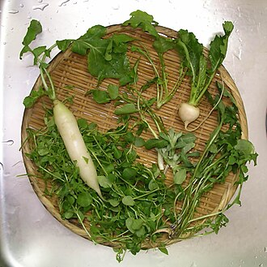

せり（芹）の生産量 都道府県ランキング
全17県の順位と、とれた量
せりが日本でいちばん多くとれるのは宮城県です。331 tで、全国（818 t）の40%を占めます。

| 順位 | 都道府県 | 収穫量 | 全国に占める割合 |
|---|---|---|---|
| 1位 | 宮城県 | 331 t | 40% |
| 2位 | 茨城県 | 172 t | 21% |
| 3位 | 大分県 | 96 t | 12% |
| 4位 | 秋田県 | 76 t | 9.3% |
| 5位 | 高知県 | 40 t | 4.9% |
| 6位 | 山形県 | 26 t | 3.2% |
| 7位 | 熊本県 | 21 t | 2.6% |
| 8位 | 愛知県 | 17 t | 2.1% |
| 9位 | 福島県 | 9 t | 1.1% |
| 10位 | 青森県 | 8 t | 1.0% |
| 11位 | 福岡県 | 8 t | 1.0% |
| 12位 | 岩手県 | 3 t | 0.4% |
| 13位 | 神奈川県 | 3 t | 0.4% |
| 14位 | 大阪府 | 3 t | 0.4% |
| 15位 | 石川県 | 2 t | 0.2% |
| 16位 | 京都府 | 1 t | 0.1% |
| 17位 | 岡山県 | 1 t | 0.1% |
この数字について
- 分類：セリ科
- 全国の収穫量：818 t
- この数字が表すもの：収穫量（畑や田でとれた重さ）
- 調査：地域特産野菜生産状況調査 令和6年産
- 17県分を調査（調査していない県は順位に入りません）
せりの生産量について、よくある質問
- せりの生産量が日本一の都道府県はどこですか？
- 宮城県です。地域特産野菜生産状況調査（令和6年産）で331 tでした。
- せりの生産量ランキング2位・3位はどこですか？
- 2位は茨城県（172 t）、3位は大分県（96 t）です。
- せりの生産量ランキング4位・5位はどこですか？
- 4位は秋田県（76 t）、5位は高知県（40 t）です。せりの全17県の順位は上の表のとおりです。
- せりの全国の生産量はどれくらいですか？
- 818 t（令和6年産）です。